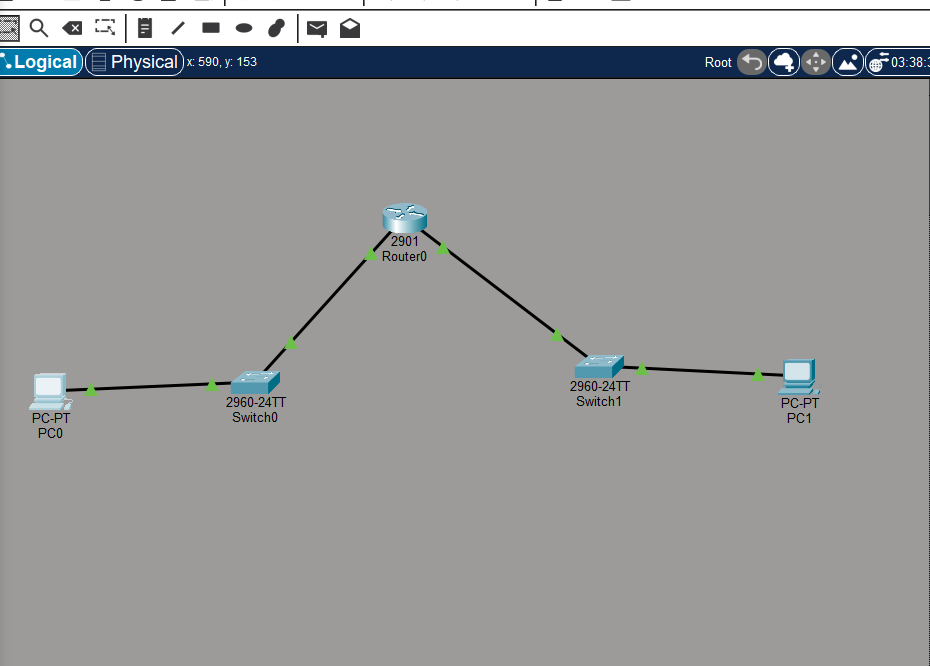
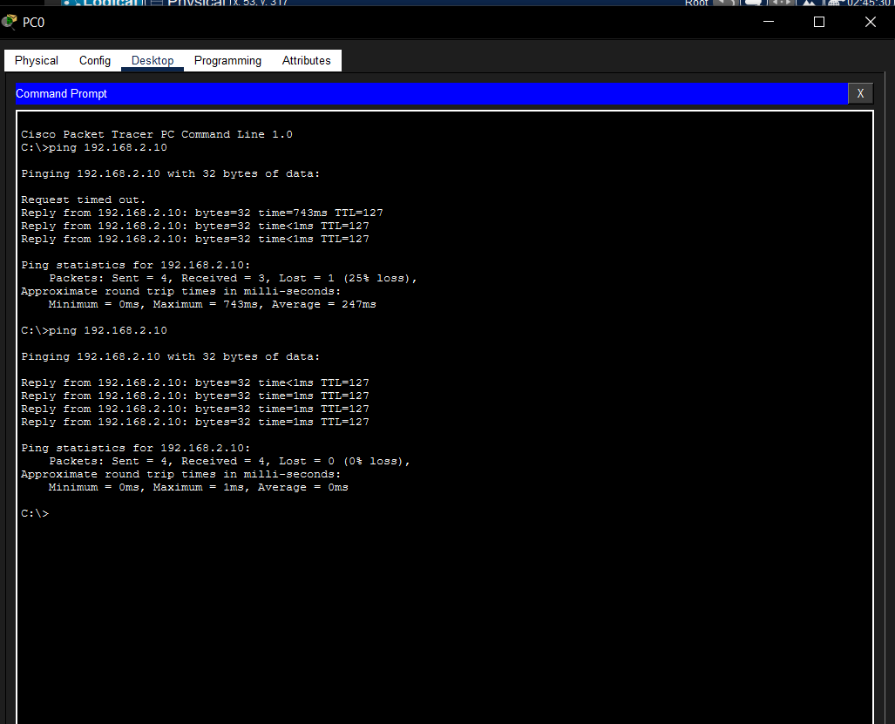
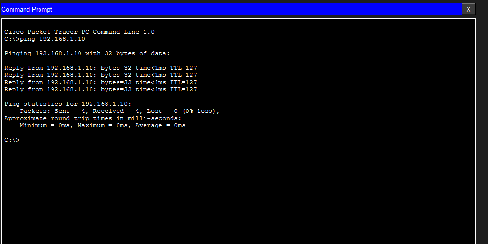
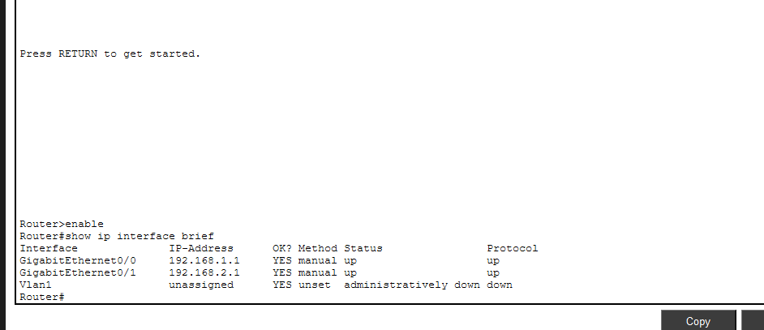
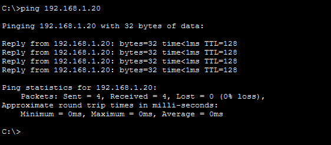
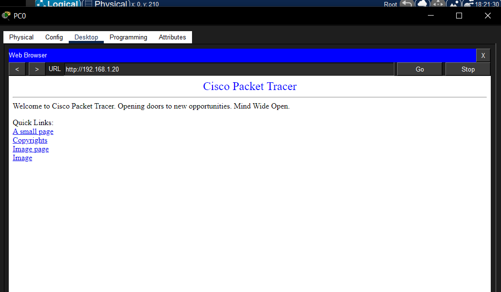
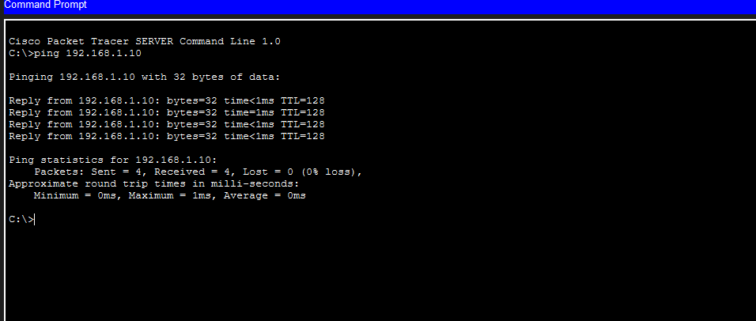
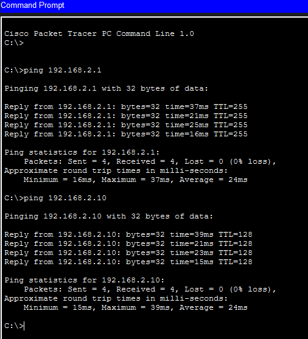

Packet Tracer Lab
This lab was used to put the concepts I learned in Module 2 into practice using Cisco Packet Tracer. I worked through three exercises covering communication between different networks, client-server communication and wireless connectivity.
Exercise 1: Connecting Two Different Networks
The first exercise focused on understanding how a router connects different networks. I created a topology with two PCs, two switches and one router.
Topology
PC0 ─── Switch0 ─── Router0 ─── Switch1 ─── PC1PC0 and PC1 were placed on different networks. PC0 used the 192.168.1.0/24 network while PC1 used the 192.168.2.0/24 network.

The topology used to connect two different networks.
IP Addressing
| Device | IP Address | Default Gateway |
|---|---|---|
| PC0 | 192.168.1.10 | 192.168.1.1 |
| Router0 G0/0 | 192.168.1.1 | — |
| Router0 G0/1 | 192.168.2.1 | — |
| PC1 | 192.168.2.10 | 192.168.2.1 |
Configuring the Router
I configured both GigabitEthernet interfaces on Router0 with
IP addresses. I also learned that router interfaces can be
administratively down, so I had to use the
no shutdown command to bring them up.
enable
configure terminal
interface gigabitEthernet 0/0
ip address 192.168.1.1 255.255.255.0
no shutdown
interface gigabitEthernet 0/1
ip address 192.168.2.1 255.255.255.0
no shutdownTesting PC0 to PC1
After configuring the devices, I used the ping command on PC0 to test communication with PC1. The communication was successful.

PC0 successfully communicating with PC1 through Router0.
Testing PC1 to PC0
I also tested communication in the opposite direction by pinging PC0 from PC1. This was successful as well.

PC1 successfully communicating with PC0.
Checking the Router Interfaces
I used show ip interface brief to check the
router interfaces and confirm that they had the correct IP
addresses and were operational.

Router0 interfaces after configuration.
Exercise 2: Client and Server Communication
In the second exercise, I extended the network from Exercise 1 by adding a server. The server was connected to Switch0 and configured with an IP address on the 192.168.1.0/24 network.
PC0 ─── Switch0 ─── Server0Configuring Server0
Server0 was configured with the following IPv4 settings:
| Setting | Value |
|---|---|
| IPv4 Address | 192.168.1.20 |
| Subnet Mask | 255.255.255.0 |
| Default Gateway | 192.168.1.1 |
Testing PC0 to Server0
I used PC0 to ping Server0. The successful ping showed that the client could reach the server over the network.

PC0 successfully communicating with Server0.
Accessing the Server
I enabled the HTTP service on Server0 and used PC0 to access the server. This helped me understand that a server does more than simply have an IP address. It can provide services that clients can request.

PC0 accessing the service provided by Server0.
Testing Server0 to PC0
I then tested communication from Server0 back to PC0. The successful result confirmed that the two devices could communicate with each other.

Server0 successfully communicating with PC0.
Exercise 3: Wireless Connectivity
The third exercise extended the existing network by adding a wireless access point and a laptop. The purpose was to understand how a wireless device can join a network without using an Ethernet cable.
Adding the Access Point
I added an Access Point and connected it to Switch1 using a copper straight-through cable. The Access Point provided the wireless connection for Laptop0.
Switch1 ─── Access Point
)))
Laptop0Connecting Laptop0 Wirelessly
Laptop0 was connected to the wireless network through the Access Point. No Ethernet cable was used between Laptop0 and the Access Point.
I then configured Laptop0 with an IPv4 address on the 192.168.2.0/24 network.
| Setting | Value |
|---|---|
| IPv4 Address | 192.168.2.20 |
| Subnet Mask | 255.255.255.0 |
| Default Gateway | 192.168.2.1 |
Testing Wireless Communication
After connecting Laptop0 wirelessly and configuring its IP address, I used ping to test communication. The successful result showed that Laptop0 could communicate through the wireless network.

Laptop0 successfully communicating through the wireless network.
What I Learned From the Packet Tracer Labs
These exercises helped me connect the concepts from Module 2 to practical networking tasks. I worked with several different network devices and saw how they work together.
- Switches connect devices within a network.
- Routers connect different IP networks.
- Devices need correctly configured IP addresses.
- Default gateways allow devices to reach other networks.
- Router interfaces may need to be enabled using
no shutdown. - Servers can provide services to clients.
- Ping can be used to test IP connectivity.
- Access points allow devices to connect wirelessly.
- A network can contain both wired and wireless devices.
The labs also showed me that networking is not about one device working alone. Different components have different roles, and they have to be correctly connected and configured for communication to work.
Final Summary
By the end of the practical work, I had worked with PCs, switches, a router, a server and a wireless access point. I configured IPv4 addresses, default gateways and router interfaces, then used ping and a server service to test communication.
The Internet and ISP connection were covered separately in the Internet Connectivity lesson. The Packet Tracer work focused on the network components and connectivity that I could configure and test directly.